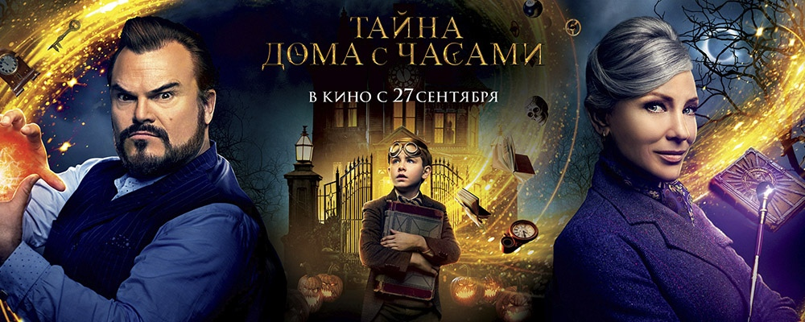

О компании
Учреждения культуры, оказывающие услуги на базе здания кинотеатра «Победа»:
Основные направления деятельности учреждения: О компании
- содействие сохранению и приумножению художественных традиций;
- развитие клубных формирований, любительских объединений, коллективов самодеятельного творчества, профессиональных творческих коллективов;
- повышение культурного уровня населения;
- организация и проведение культурно-массовых мероприятий;
- осуществление проектов кинообслуживания, кинопоказов.
С 2015 года учреждение работает на базе здания кинотеатра «Победа» в связи с чем в кинотеатре стали регулярными не только кинопоказы, но и концерты, фестивали, детские праздники, тематические выставки и другие мероприятия.
МБУК «Городской Дворец культуры и искусства» создано в 2012 году.
На базе учреждения работают одни из лучших творческих коллективов города Брянска:
- городской инструментальный ансамбль «Пересвет» – руководитель Вислобоков В. Г.;
- городской инструментальный ансамбль «Фестиваль» – руководитель Мирмов Б. З.;
- литературная студия – руководитель Черникова Е. А.